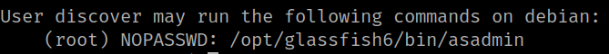
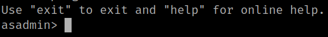

5.1 User's privileges
1. Show “first” user privileges.
first@first:/tmp$ sudo -l
Output:

The “root” user can run “/opt/glassfish6/bin/asadmin” without any password..
2. Run the binary “/opt/glassfish6/bin/asadmin”.
discover@debian:/$ sudo /opt/glassfish6/bin/asadmin
Output:
